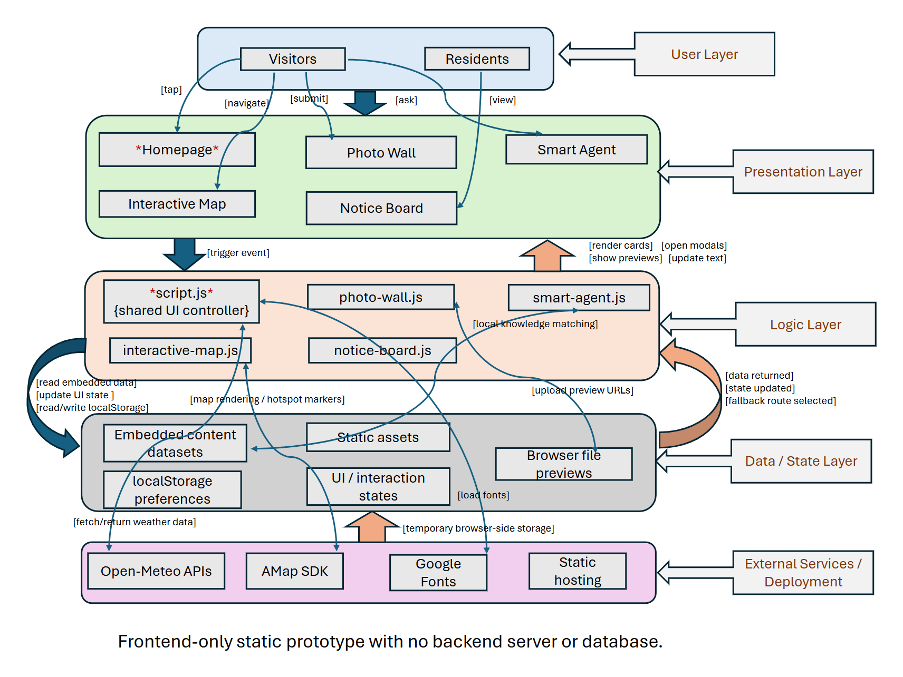

System Layers And User Entry Points
The system adopts a frontend-only static multi-page architecture that organises the application into clearly defined layers: User, Presentation, Logic, Data/State, and External Services/Deployment. Two primary user groups, visitors and residents, access the system through five main interfaces: Homepage, Interactive Map, Photo Wall, Notice Board, and Smart Agent.
You can click on any layer to view the detailed introduction of that layer.

Implementation Summary
Overall, this architecture provides a lightweight yet functional implementation model, enabling interactive user experiences within a static deployment environment while maintaining a clear separation between interface, logic, data, and service dependencies.
Source: System-Architecture-text.docx